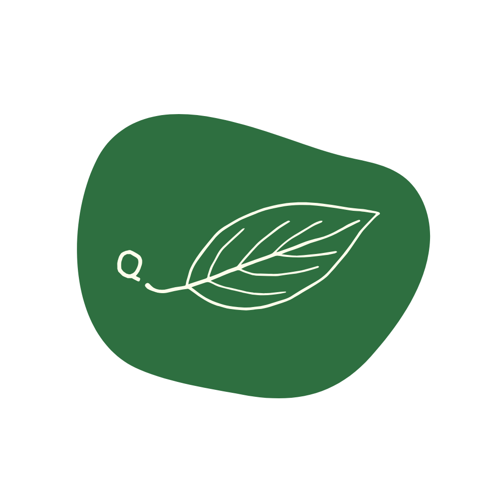
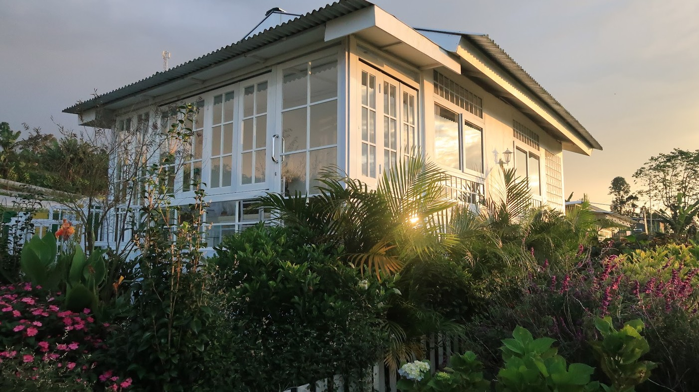
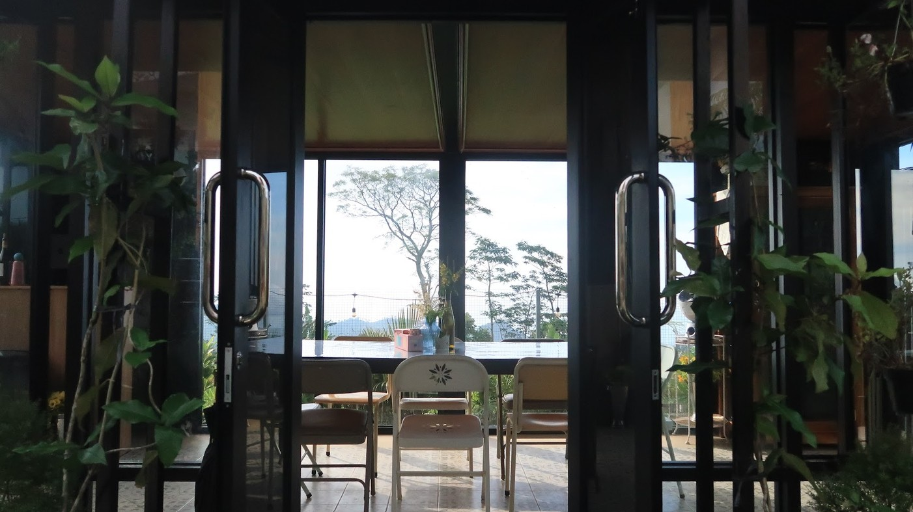
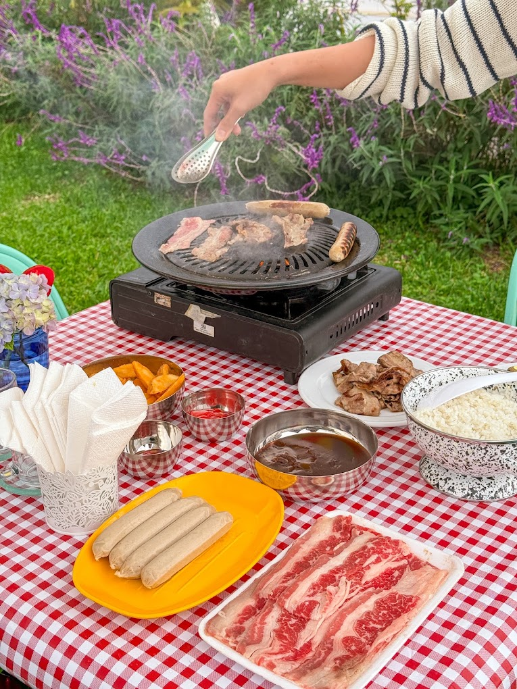

❮
❯
Category
Story Title
Story description goes here...


Querencia is a Spanish word that describes a place where one feels at home, where strength is restored and where one feels safe to simply be.
As a family-run farm and cabin, that meaning became the foundation of everything we built.
We opened our home to create a space where people can slow down, reconnect with themselves & nature, and experience the quiet and peace we've found here in the mountains of Wanagiri.
Bright and airy by day, cozy by night, our private cabin is thoughtfully designed to invite nature in while offering all the comforts of home. Large windows fill the space with natural light and overlook our gardens and surrounding greenery.
At Querencia, food is another way we welcome you into our home.
From freshly prepared breakfasts and comforting meals to homemade cakes and reservation-only BBQ, every dish is made with care.
Whether you settle into the warmth of our glasshouse or dine outdoors surrounded by gardens and mountain air, we hope every meal becomes an opportunity to slow down, reconnect and simply enjoy being together.
View Cafe Menu



Select your preferred booking platform below to check live availability and rates.
At 1,200 meters above sea level, our farm enjoys a crisp mountain climate ranging from 16°C to 22°C. We highly recommend bringing a warm sweater or light jacket for the misty mornings and cozy evenings.
No, our farm is accessible by standard cars and scooters. The main road is paved, though the final driveway is a charming, slightly uneven farm road. Our staff is always ready to assist with parking and luggage.
Yes! While the mountain mist invites you to completely disconnect, we know inspiration—and deadlines—sometimes demand a connection. We provide adequate internet blanketing the entire cabin area. Whether you need to lock in for remote work or just chill out and stream your favorite acoustic playlists by the window.
No, and you won't need one! Nestled at 1,200 meters above sea level, our farm naturally enjoys a crisp, cooling mountain climate that ranges from 16°C to 22°C. Simply open your windows and let the fresh highland breeze act as your natural air conditioning.
Currently, we offer one unit to ensure utter privacy, peace, and tranquility for our guests. However, we are actively in the process of expanding our sanctuary and will be adding more units soon.
Each cabin can comfortably accommodate up to 4 guests. Please note that our standard nightly rate is inclusive of two people, making it perfect for a couple's retreat. Additional guests can easily be accommodated for a small extra charge.
Story description goes here...